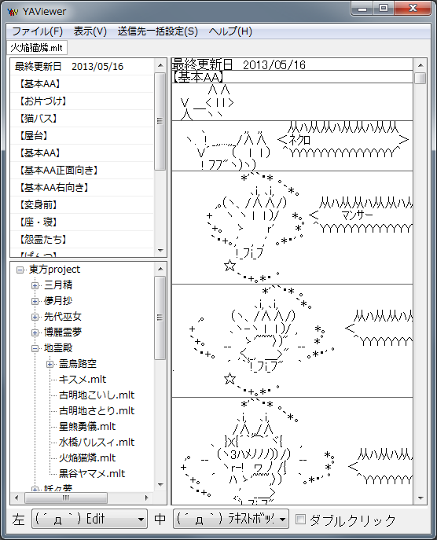

1.セットアップ
YAViewerは単純に使うだけなら、非常に簡単に出来ています。
まずはYAViewer.zipファイルを解凍しましょう。
これは普通のZIPファイルですので、YAViewerを置きたいフォルダに解凍してください。
YAViewerは単純に使うだけなら、非常に簡単に出来ています。
まずはYAViewer.zipファイルを解凍しましょう。
これは普通のZIPファイルですので、YAViewerを置きたいフォルダに解凍してください。
YAViewerを起動するためには、ZIPファイルを解凍したフォルダの中にある
YAViewer.exeを実行します。
正しく実行された場合、次のようなウィンドウが立ち上がります。
YAViewerは前述の通り、フォルダを単位としてファイルを管理します。
多くの場合は作品ごとに纏めたフォルダで管理されているかと思いますが、ここでは東方Projectのフォルダを追加してみましょう。
ここではHukuTemp内の東方Projectフォルダを選択しています。
これをドラッグして、赤枠の中へドロップします。
これで東方Projectフォルダが追加されました。
実際に同じ操作を行うと、次のように追加されていることがわかります。
さぁ、これで準備が整いました。
次はこの中から「火焔猫燐.mlt」を開いてみましょう！
ということで、次は東方Projectの猫娘、火焔猫燐のAAが収められている、「火焔猫燐.mlt」ファイルを開いてみましょう。
まず、「[+]…東方Project」となっている部分の[+]部分をクリックします。
すると「東方Project」フォルダの中のフォルダとファイルが一覧で表示されました。
YAViewerでは、これを繰り返して目的のファイルを探していきます。
今回の目的である「火焔猫燐.mlt」は「地霊殿」フォルダに収められているので、最初と同じ要領で地霊殿フォルダを開きます。
目的の「火焔猫燐.mlt」が見つかりましたね。
では「火焔猫燐.mlt」をクリックしてみてください。

そうして無事に「火焔猫燐.mlt」ファイルを開くことが出来ました。
他のファイルでも同じなので試してみてください。
section.4と同じ方法を使って、ファイルを複数開くことも出来ます。
「古明地こいし.mlt」「古明地さとり.mlt」を順番に開いた状態が下のようになります。
「火焔猫燐.mlt」「古明地こいし.mlt」「古明地さとり.mlt」と開いたファイル名が並んでいるのがわかります。
このファイル名部分をクリックすることで、表示するファイルを変更することが出来ます。
ファイルを開いた後、AAを選択することでエディタやクリップボードにAAを貼り付けることが出来ます。
また下側の「左 (´д｀)Edit」などと書いてある部分をクリックして、貼り付ける先を変えることが出来ます。
左とあるのは左クリック、中とあるのは中クリック(マウスホイールクリック)時の貼り付け先です。
また、ダブルクリックにチェックマークを入れると、ダブルクリック時にのみ送信し、シングルクリック時には送信できないようになります。
{kind=link}
{kind=link}
{kind=link}
{kind=link}
{kind=link}
{kind=link}
{kind=link}
{kind=link}
{kind=link}
{kind=link}
{kind=link}